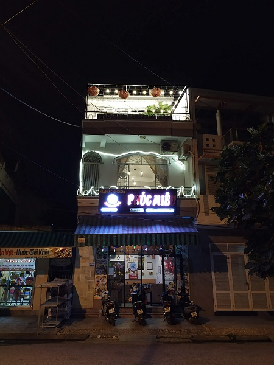
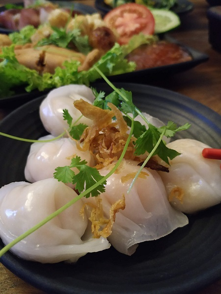

Goodby Vietnam, you gifted me a sunny vacationd and a new favourite type of food!
The first day in Vietnam was started from eating dumplings, the last day was finished by eating dumplings. This time in a local, not touristic caffee, quite far from a beach. We ordered a taxy to get there and where arrived, people in a cafe was surprised, I think they see tourists not often, especially arrived on an expensive car.
We ordered some different dumplings to share to each other for testing. There were special sauces to each portion of food, but we mixed them. Through some time a waiter came up frome a kitchen and showed us which sauce combined to the certain dumplings. As a bonuse they brought to us a soup with a "hundred-year egg". It is a black, preserved chiken egg, in a mixture of clay, ash, salt, quicklime and rice hulls for several weeks to several months. It has too specific taste, like a soup itself. Trouly speaking, I wasn't able to eat it all.



Summaries:
1 – It's cool to try local food, even if a name of this food doesn't sound deliciously for our culture.
2 – I need to rebuild my site, develope one stile and think how I could make control better.
3 – Will not use slider anymore, it's uncomfortable.